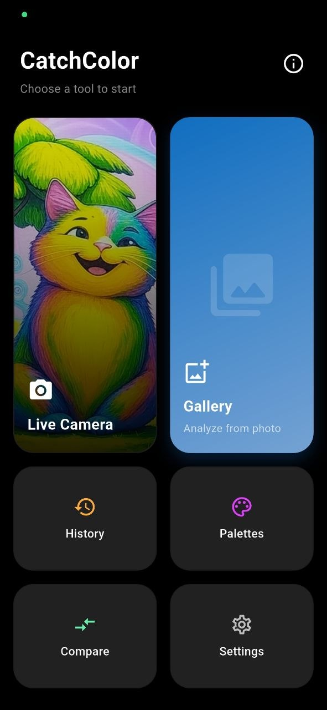
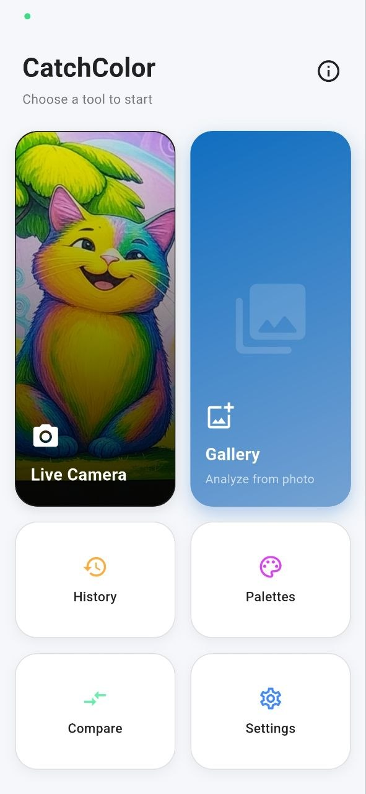
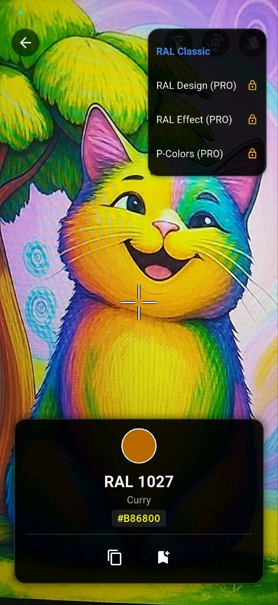
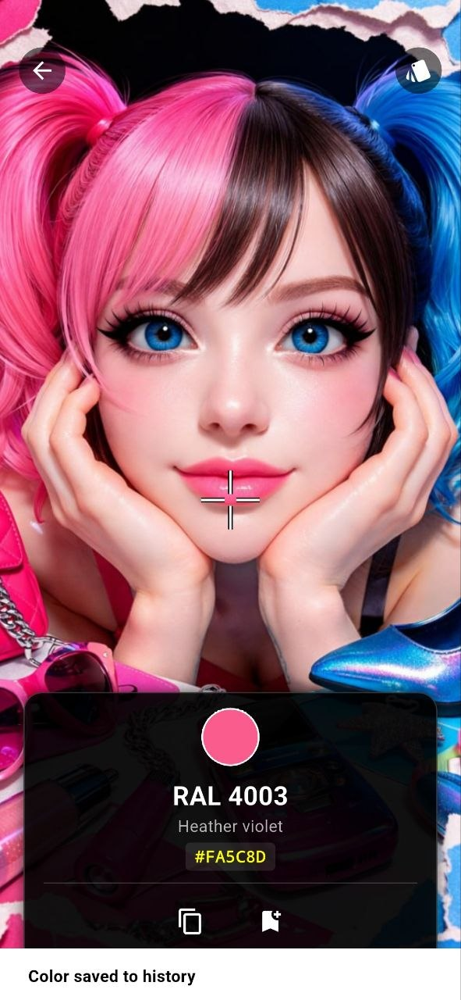
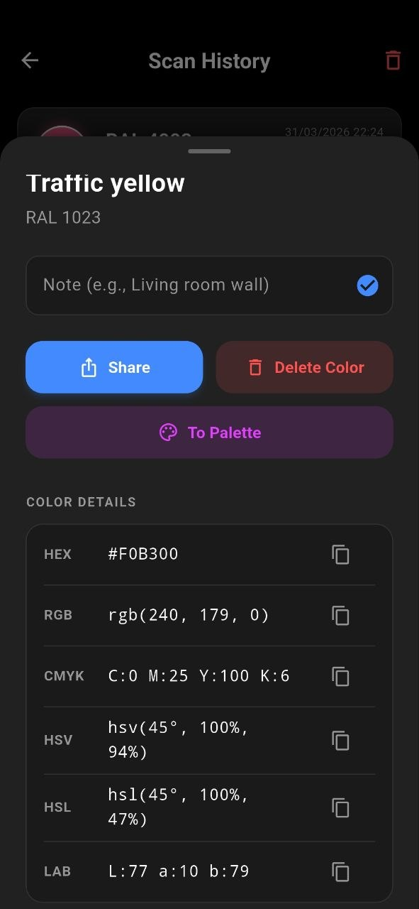
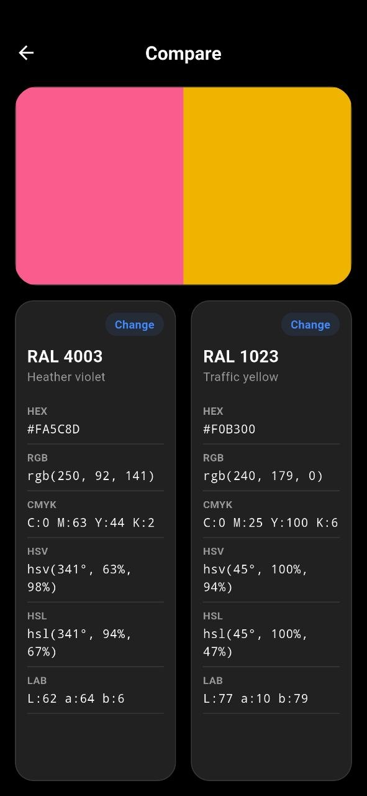

CatchColor
CatchColor — це ваш ідеальний цифровий детектор кольору та інструмент для підбору палітр. Миттєво витягуйте кольори за допомогою живої камери або вибирайте їх з галереї.
Вигляд інтерфейсу






Основні функції
- Жива піпетка з камери: Визначайте кольори в реальному часі через камеру.
- Екстрактор кольору з фото: Завантажуйте зображення з галереї та знаходьте точний відтінок.
- Професійні каталоги: Миттєво підбирайте колір до галузевих стандартів.
- Точні значення: Отримуйте точні HEX-коди, готові до копіювання в один клік.
- Чистий та інтуїтивний UI: Швидкий, без зайвого сміття та з підтримкою темної теми.
Підтримувані каталоги
- RAL Classic: Стандартні промислові кольори та покриття
- RAL Design: Розширена система Hue-Lightness-Chroma
- RAL Effect: Інноваційні промислові палітри
- P-Colors: Професійні відтінки
👑 CatchColor Pro
Покращіть свій робочий процес за допомогою преміум-функцій для професіоналів:
- Повний доступ до каталогів: Розблокуйте бази RAL Design, RAL Effect та P-Colors.
- Безлімітна історія: Зберігайте та в будь-який час переглядайте всі відскановані кольори.
- Експорт даних: Легко експортуйте збережені палітри для зовнішніх проєктів.
- 100% без реклами: Насолоджуйтесь роботою без жодних переривань.
Чому CatchColor?
Припиніть вгадувати кольори на око — фіксуйте їх точно. CatchColor аналізує конкретний піксель і надає вам найближчі збіги з професійних каталогів кольорів, разом із HEX-кодами та офіційними назвами. Ідеально підходить для дизайну інтер'єрів, цифрових ілюстрацій, фарбування та будівництва. Завантажте CatchColor сьогодні та знайдіть свій ідеальний колір!